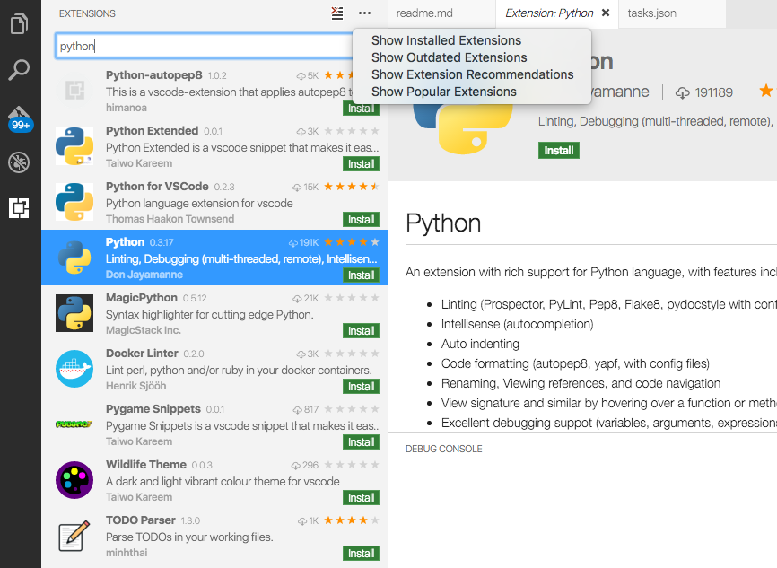
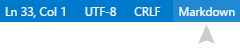

Programming Languages
Hundreds of Programming Languages Supported
In Visual Studio Code, we have support for almost every major programming language. Several ship in the box, for example, JavaScript, TypeScript, CSS, and HTML but more rich language extensions can be found in the VS Code Marketplace.
Here are four of the most popular language extensions:
Go to the Marketplace or use our integrated extension manager and search for your desired programming language to find snippets, code completion/IntelliSense providers, linters, debuggers and more.
Language Specific Documentation
On this website, we have a number of topics outlining several of the common languages supported by VS Code. These include: C++ - C# - CSS - Dockerfile - Go - HTML - JavaScript - JSON - Less -
Markdown - PHP - Python - Sass - T-SQL - TypeScript.
Click on any linked item to get an overview of how to use VS Code in the context of that language. Most language extensions also contain a summary of their core features in their README.
Language Features in VS Code
The richness of support varies across the different languages and their extensions:
- Syntax highlighting and bracket matching
- Smart completions (IntelliSense)
- Linting and corrections
- Code navigation (Go to Definition, Find All References)
- Debugging
- Refactoring
Language Extensions
The community is providing VS Code language support for nearly any modern programming language. To see if there are extensions for the language you’re interested in, simply bring up the Extensions view (kb(workbench.view.extensions)) and filter on the language name in the search box.

You can also browse the VS Code Marketplace directly to look for supported languages.
Changing the Language for the Selected File
In VS Code, we default the language support for a file based on its filename extension. However at times you may wish to change language modes, to do this click on the language indicator - which is located on the right hand of the status bar. This will bring up the Command Palette for Select Language Mode.

Language Id
VS Code associates a language mode with a specific language identifier so that various VS Code features can be enabled based on the current language mode.
A language identifier is often (but not always) the lowercased programming language name. Note that casing matters for exact identifier matching (‘Markdown’ != ‘markdown’). Unknown language files have the language identifier plaintext.
You can find a list of all known identifiers in the language identifier reference.
You can see the list of currently installed languages and their identifiers in the Change Language Mode (kb(workbench.action.editor.changeLanguageMode)) dropdown.
Adding a file extension to a Language
You can add new file extensions to an existing language with the files.associations setting.
For example, the setting below adds the .myphp file extension to the php language identifier:
|
IntelliSense (kb(editor.action.triggerSuggest)) will show you the available language identifiers.
Next Steps
Now you know that VS Code has support for the languages you care about. Read on…
- Editing Evolved - Lint, IntelliSense, Lightbulbs, Peek and Go to Definition and more
- Debugging - This is where VS Code really shines
- Customization - themes, settings and keyboard bindings
Common Questions
Q: Can I contribute my own language service?
A: Yes you can! Check out the example language server in the Extending Visual Studio Code documentation.
Q: What if I don’t want to create a full language service, can I reuse existing TextMate bundles?
A: Yes, you can also add support for your favorite language through TextMate colorizers. See Colorizers to learn how to integrate TextMate .tmLanguage syntax files into VS Code.
Q: Can I map additional file extensions to a language?
A: Yes, with the files.associations setting you can map file extensions to an existing language either globally or per workspace.
Here is an example that will associate more file extensions to the PHP language:
|
You can also configure full file paths to languages if needed. The following example associates all files in a folder somefolder to PHP:
|
Note that the pattern is a glob pattern that will match on the full path of the file if it contains a / and will match on the file name otherwise.